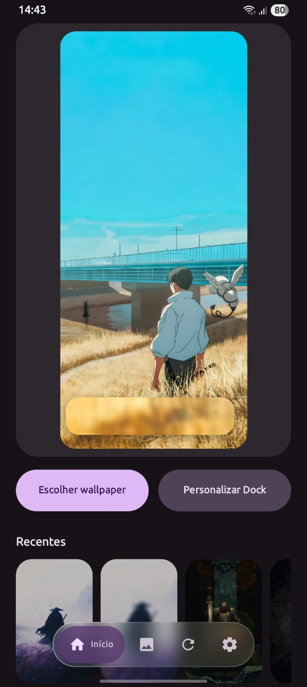
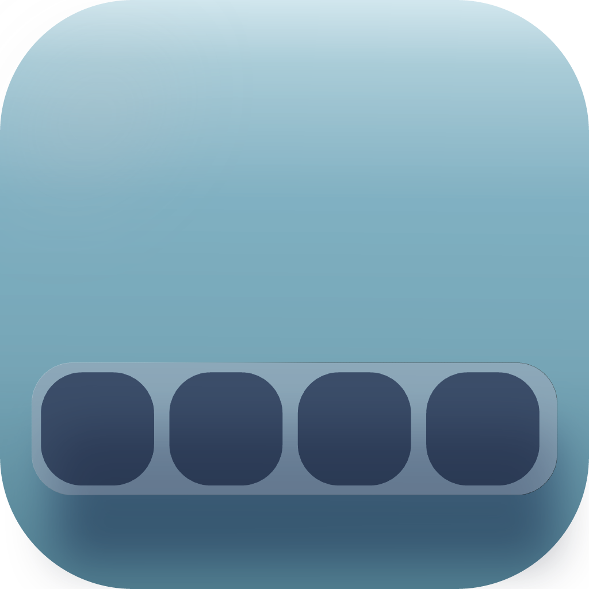
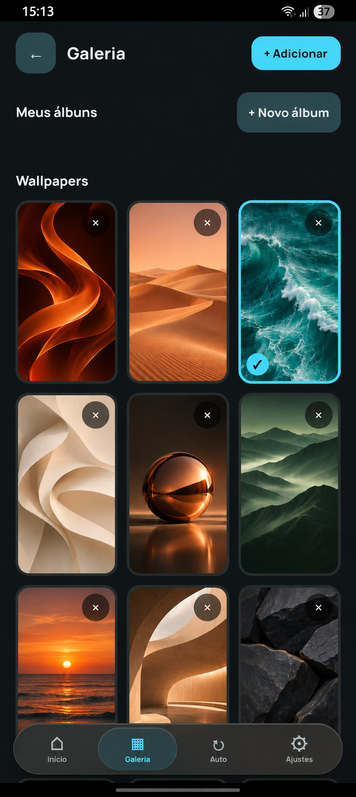
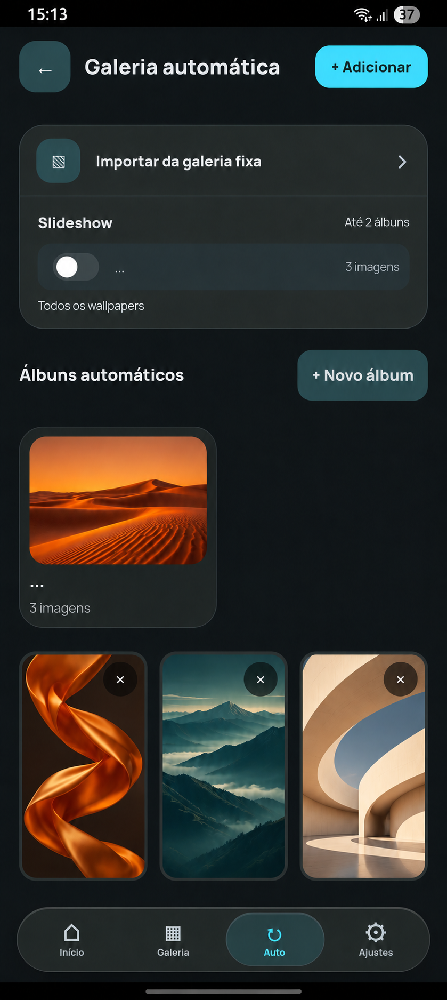
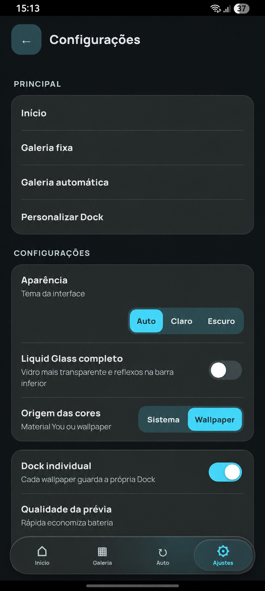

01 — PERSONALIZE

Um toque de vidro.
Ajuste o brilho, a refração e o acabamento da sua dock.

Dock LíquidaUM NOVO OLHAR PARA O SEU ANDROID
Wallpapers que inspiram.
Uma dock que reflete você.

Ajuste o brilho, a refração e o acabamento da sua dock.

Organize seus wallpapers em galerias e álbuns, do seu jeito.

Monte coleções para a troca automática e mantenha cada dock individual.
Telas do app com wallpapers ilustrativos.
Uma imagem pode mudar tudo. E cada imagem pode ter a própria dock.
Guarde uma configuração para cada wallpaper.
Escolha entre a paleta do sistema e as cores do wallpaper.
Uma interface que combina com a sua preferência.

Escolha uma versão estável.
Baixe o APK e encontre sua combinação.
Consultando os APKs oficiais.
Versões em teste. Podem apresentar falhas; para o uso diário, prefira uma versão final.
Consultando as pré-releases com beta numerada.
Downloads oficiais pelo GitHub Releases. Versões finais acima; betas numeradas na aba abaixo delas.
Instalação, atualizações e os primeiros ajustes.
Baixe uma versão final na seção Downloads e abra o arquivo APK pela notificação de download ou pelo gerenciador de arquivos. Toque em Instalar e siga as instruções do Android.
Ir para os downloads ↗Se o Android bloquear a instalação, toque em Configurações no aviso e ative Permitir desta fonte para o navegador ou gerenciador de arquivos que abriu o APK. Depois, volte ao arquivo para instalar.
Também é possível procurar por Instalar apps desconhecidos nas configurações do celular. O caminho varia conforme a marca e a versão do Android. Após instalar, você pode desativar essa permissão novamente.
Consultar a ajuda do Android ↗O Dock Líquida aplica o efeito de vidro à imagem do wallpaper; ele não substitui o launcher nem os ícones da tela inicial. Você pode começar com o launcher que já usa.
Alinhe a dock no app com a posição dos ícones. Se o launcher tiver um fundo próprio na dock, procure nas opções dele um ajuste para ocultar esse fundo. Os controles e o resultado dependem do launcher.
A versão final é a opção indicada para o uso diário. As betas trazem mudanças em teste e podem apresentar falhas. Elas ficam separadas na aba Pré-release Beta, abaixo das versões finais, com as notas de cada versão.
Ver versões beta ↗Baixe o APK mais recente pelo site e abra-o. Se o Android reconhecer a mesma assinatura e um código de versão compatível, ele oferecerá a atualização mantendo os dados do app.
Se houver conflito, não desinstale de imediato: confira a versão e a origem do APK. Desinstalar pode apagar seus dados locais.
O seu wallpaper.
A sua assinatura.